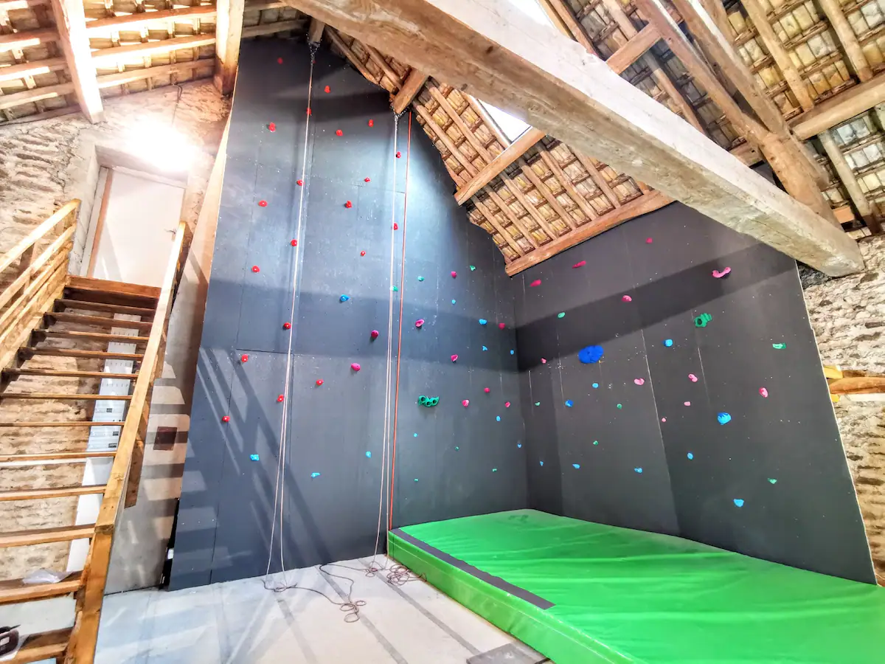

📍 Le Moulin des Ducs, en images
Le Moulin des Ducs est un ancien moulin datant de 1343, entièrement rénové et classé meublé de tourisme 5 étoiles. Niché sur un domaine privé de 7 hectares, sans aucun vis-à-vis, il offre un cadre paisible où se mêlent histoire, confort et nature.
Avec ses 750 m², le moulin dispose de vastes espaces de vie pensés pour partager des moments conviviaux : un spectaculaire salon de 90 m² avec plafond cathédrale, cheminée centrale et billard, une grande cuisine entièrement équipée pouvant accueillir de grands repas, ainsi qu'une immense terrasse suspendue, dont une partie surplombe l'eau, offrant une vue imprenable sur la piscine et les espaces naturels.
Le domaine regorge d'activités et d'espaces de détente pour tous les goûts :
- 🏊 Piscine chauffée de 12,5 × 4,5 m, accessible toute l'année.
- 🎱 Billard.
- 🎬 Salle de projection.
- 💪 Salle de sport.
- 🧘 Salle de yoga.
- 🧗 Mur d'escalade.
- 🏓 Table de ping-pong.
- 🎳 Piste de quilles.
- 🏀 Mini-basket.
- 🎲 Vélos et autres jeux à disposition.
- ⚽ Terrain de pétanque.
- 🌳 Grand parc arboré, étang et nombreux espaces pour se promener ou simplement profiter du calme.
- 🛝 Espace sécurisé pour les enfants.


